For data that is evenly sampled except for a moderate number of gaps, surrogate sequences can be produced relatively straightforwardly by assuming the value zero during the gaps and minimising a standard cost function like Eq.(23) while excluding the gaps from the permutations tried. The error made in estimating correlations would then be identical for the data and surrogates and could not affect the validity of the test. Of course, one would have to modify the nonlinearity measure to avoid the gaps. For data sampled at incommensurate times, such a strategy can no longer be adopted. We then need different means to specify the linear correlation structure.
Two different approaches are viable, one residing in the spectral domain and
one in the time domain. Consider a time series sampled at times 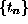 that
need not be equally spaced. The power spectrum can then be estimated by the
Lomb periodogram, as discussed for example in Ref. [42].
For time series sampled at constant time intervals, the Lomb periodogram yields
the standard squared Fourier transformation. Except for this particular case,
it does not have any inverse transformation, which makes it impossible to use
the standard surrogate data algorithms mentioned in Sec. 4. In
Ref. [43], we used the Lomb periodogram of the data as a constraint for
the creation of surrogates. Unfortunately, imposing a given Lomb periodogram
is very time consuming because at each annealing step, the O(N) spectral
estimator has to be computed at 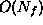 frequencies with 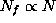.
Press et al. [42] give an approximation algorithm that uses the fast
Fourier transform to compute the Lomb periodogram in 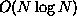 time rather
than  . The resulting code is still quite slow.
. The resulting code is still quite slow.
As a more efficient alternative to the commonly used but computationally costly
Lomb periodogram, let us suggest to use binned autocorrelations. They are
defined as follows. For a continuous signal s(t) (take 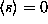,
 for simplicity of notation here), the autocorrelation function is
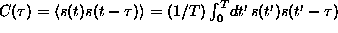. It can be
binned to a bin size 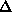, giving 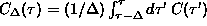. We now have to approximate all
integrals using the available values of 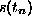. In general, we estimate
for simplicity of notation here), the autocorrelation function is
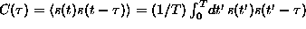. It can be
binned to a bin size 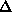, giving 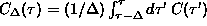. We now have to approximate all
integrals using the available values of 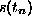. In general, we estimate
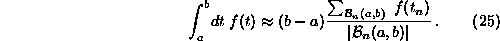
Here, 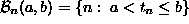 denotes the bin ranging from a
to b and 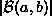 the number of its elements. We could improve this
estimate by some interpolation of 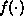, as it is customary with numerical
integration but the accuracy of the estimate is not the central issue here.
For the binned autocorrelation, this approximation simply gives
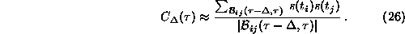
Here, 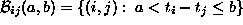.
Of course, empty bins lead to undefined autocorrelations. If we have evenly
sampled data and unit bins, 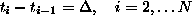, then the
binned autocorrelations coincide with ordinary autocorrelations at
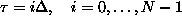.
Once we are able to specify the linear properties of a time series, we can also define a cost function as usual and generate surrogates that realise the binned autocorrelations of the data. A delicate point however is the choice of bin size. If we take it too small, we get bins that are almost empty. Within the space of permutations, there may be only a few ways then to generate precisely that value of 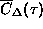, in other words, we over-specify the problem. If we take the bin size too large, we might not capture important structure in the autocorrelation function.
As an application, let us construct randomised versions of part of an ice core data set, taken from the Greenland Ice Sheet Project Two (GISP2) [44]. An extensive data base resulting from the analysis of physical and chemical properties of Greenland ice up to a depth of 3028.8 m has been published by the National Snow and Ice Data Center together with the World Data Center-A for Palaeoclimatology, National Geophysical Data Center, Boulder, Colorado [45]. A long ice core is usually cut into equidistant slices and initially, all measurements are made versus depth. Considerable expertise then goes into the dating of each slice [46]. Since the density of the ice, as well as the annual total deposition, changes with time, the final time series data are necessarily unevenly sampled. Furthermore, often a few values are missing from the record. We will study a subset of the data ranging back 10000 years in time, corresponding to a depth of 1564 m, and continuing until 2000 years before present. Figure 14 shows the sampling rate versus time for the particular ice core considered.
Figure: Sampling rate versus time for an ice core time series.
We use the 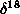O time series which indicates the deviation of the 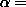 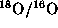 ratio from its standard value 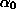: 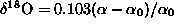. Since the ratio of the condensation rates of the two isotopes depends on temperature, the isotope ratio can be used to derive a temperature time series. The upper trace in Fig. 15 shows the recording from 10000 years to 2000 years before present, comprising 538 data points.
In order to generate surrogates with the same linear properties, we estimate autocorrelations up to a lag of 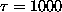 years by binning to a resolution of 5 y. A typical surrogate is shown as the lower trace in Fig. 15. We have not been able to detect any nonlinear structure by comparing this recording with 19 surrogates, neither using time asymmetry nor prediction errors. It should be admitted, however, that we haven't attempted to provide nonlinearity measures optimised for the unevenly sampled case. For that purpose, also some interpolation is permissible since it is then part of the nonlinear statistic. Of course, in terms of geophysics, we are asking a very simplistic question here. We wouldn't really expect strong nonlinear signatures or even chaotic dynamics in such a single probe of the global climate. All the interesting information -- and expected nonlinearity -- lies in the interrelation between various measurements and the assessment of long term trends we have deliberately excluded by selecting a subset of the data.
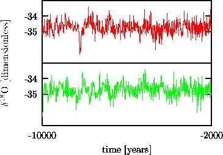
Figure: Oxygen isotope ratio time series derived from an ice core (upper trace) and a corresponding surrogate (lower trace) that has the same binned autocorrelations up to a lag of 1000 years at a resolution of 5 years.